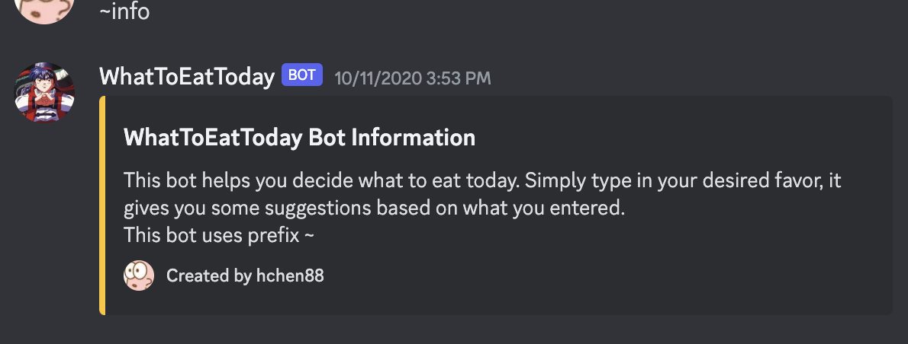

Education

BSCS
University of California, San Diego

MSCS
University of Michigan, Ann Arbor
Projects
PlotPatch
Web App: HTML, CSS, JS, Gemini API (Google AI)Turn post-show blues into new views! PlotPatch bridges your favorite stories to fresh adventures with community insights, endless content, and seamless transitions.
It features a fan fiction generator, a character-based chat bot, criteria-based recommendations and content summarization. All powered by Gemini generative model.
Link to Github Repository
Link to Video Demo


PlanPal
Social Computing App Design: G Suite, UXPlanPal is an app that help people make faster decisions on hangout schedules by centralizing multiple features on different apps and give recommendations based on groups' preferences and hangout history.
It helps alleviate pressure on making decisions for groups and makes decision making clear streamline processes.
Link to Google Sites Portfolio
San Diego Zoo Seeker
Android Application: Java, Android Studio, FigmaWe made this Android app in course CSE 110 Software Engineering. Explored Android Studio and a lot of Java programming with it. This app helps people plan their visits to a zoo.
Link to Github Repository


Little Chief
Web Application: React, REST APIA recipe browsing app by React! Developed during WIC Winter Dev Program as the team lead and one of the backend developers. Had a glimpse of web dev.
What to Eat Today
Discord Bot: Java, REST APIA bot to help decide what to eat today? Sure! I built this bot since I myself is so indecisive, and I hope some technology to help me decide what to eat.
